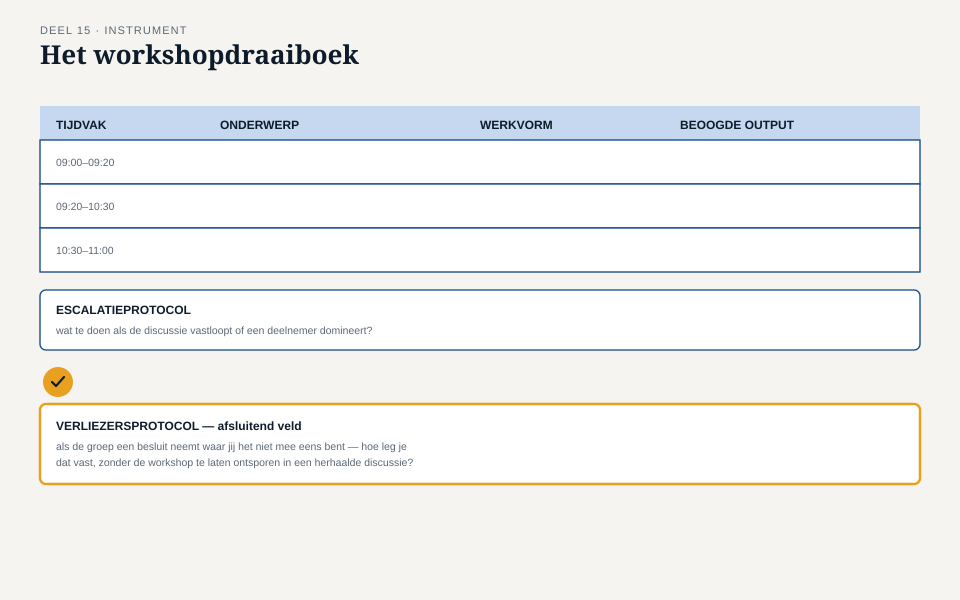

Deel 15 — Elicitatie II: workshops en conflicterende belangen
Slidedeck · Ductus-cursus Business-analyse · niveau 2 · deel 15 van 30 · twee dagdelen · 30 slides
Slide 1 — Titel
Business-analyse — deel 15 Elicitatie II: workshops en conflicterende belangen
Twee dagdelen — het zwaartepunt van dit niveau
Slide 2 — Terugblik
Deel 14: een overzichtelijke, welwillende groep.
Vandaag: belanghebbenden waarvan de ene wint wat de andere verliest.
Slide 3 — Karins weerstand
“Als we werkgevers zelf laten invoeren, gaan ze het fout doen, en dan mogen wij het weer rechtbreien.”
“Wat zou je nodig hebben om daar toch voor open te staan?”
“Bewijs dat het niet zo gaat als de vorige keer.”
Slide 4 — Drie legitieme, botsende belangen
Karin: datakwaliteit. Ruud: minder telefonische belasting. Gerard: minder gedoe, met behoud van begrip.
Slide 5 — Waar dagdeel 1 over gaat
- Grondregels
- Escaleren: productief versus destructief
- Ieders belang zichtbaar maken
- Het workshopdraaiboek
Slide 6 — Grondregels: het gesprek vóór het gesprek
Geen formaliteit — een gedeeld referentiepunt waar de facilitator op terug kan vallen.
Slide 7 — Drie grondregels
Geen oplossingen vóór het probleem in beeld is Elke zorg met een concreet voorbeeld Weerspreken van de inhoud mag, negeren van de persoon niet
Slide 8 — Dezelfde les als deel 1, nu op groepsniveau
Zodra iemand een oplossing noemt, verdringt zij de rest.
Bij conflicterende belangen is dat risico groter, niet kleiner.
Slide 9 — [Opdracht 2]
Drie uitspraken tijdens de sessie — grondregel gevolgd, of overtreden?
Slide 10 — Productieve spanning
Belangen botsen, het gesprek blijft gericht op de zaak.
Vaak precies waar de waardevolle informatie vandaan komt.
Slide 11 — Het omslagpunt
Het gesprek gaat over personen, niet over de zaak. Herhaling zonder nieuwe informatie. Reactie op wie het zegt, niet op wat er gezegd wordt.
Slide 12 — Een escalatieprotocol, vooraf bedacht
Vijf stappen, licht naar zwaar.
Slide 13 — De vijf stappen
- Benoemen wat je ziet
- Terug naar de grondregel
- Een aangekondigde pauze
- Tijdelijk splitsen
- Escaleren naar de sponsor
Slide 14 — [Opdracht 3]
Karin en Gerard beginnen te herhalen, stijgende toon. Pas het protocol toe, stap voor stap, met concrete zinnen.
Slide 15 — Niet iedereen krijgt zijn zin
De kern: iedereen gehoord, niet iedereen gelijk.
Dezelfde discipline als het optieblad — nu in het levende moment.
Slide 16 — Erkennen versus negeren
“Jouw zorg is reëel en nemen we mee, ook al kiezen we er nu voor om het anders te doen.”
Andere zin dan stilzwijgend voorbijgaan.
Slide 17 — De werkvorm van dit deel
Het workshopdraaiboek
Tijdvakken · Grondregels · Besluitvorming · Escalatie
Slide 18 — Het veld dat het verschil maakt
Het verliezersprotocol
Wat doe je, specifiek, voor wie zijn zin niet krijgt — zodat hij zich gehoord voelt?
Slide 19 — Waarom dit het vaakst wordt overgeslagen
Voelt pas relevant ná de beslissing.
Zonder dit protocol: risico dat de “verliezer” zich terugtrekt uit de rest van het programma.
Slide 20 —

Het workshopdraaiboek — met het verliezersprotocol als afsluitend veld
Slide 21 — [Opdracht 4]
Vul het volledige workshopdraaiboek in voor Merels sessie.
Slide 22 — Dagdeel 2
De workshopsimulatie
Vandaag speel je het uit.
Slide 23 — Rolverdeling
Karin · Ruud · Gerard · Facilitator · Scribe
Bereid minstens twee eigen argumenten voor, passend bij je rol.
Slide 24 — Toestemming om ongemakkelijk te worden
Een te milde simulatie leert weinig.
Zet door — de facilitator moet het protocol echt gebruiken.
Slide 25 — [De simulatie]
60-75 minuten. Het draaiboek actief gebruiken.
Slide 26 — Nabespreking: drie vragen
Wanneer werd het verliezersprotocol toegepast, en hoe landde het? Welke informatie ontstond die niet in het dossier stond? Wat zou de facilitator anders doen?
Slide 27 — Wat een goede facilitator laat zien
Niet: conflict vermijden.
Wel: conflict productief houden, en verliezen erkennen.
Slide 28 — Terug naar de casus
Karins zorg is informatie — hetzelfde patroon dat bij WGP 2.0 te laat aan het licht kwam, nu op tijd naar boven gehaald.
Slide 29 — Een belofte die moet standhouden
Karins zorg moet terugkomen in een later document, niet alleen in de belofte van dit moment.
Slide 30 — Volgende keer
Hoe traceer je waar een afspraak vandaan komt, en waar zij naartoe leidt?
Deel 16: de traceerketen als product.